Thick pipe with internal pressure
Contents
Link to the m-file.
Description
An infinitely long thick walled cylindrical pipe with inner boundary radius of 3 mm and outer boundary radius of 9 mm is subjected to an internal pressure of 1.0 MPa. A wedge with thickness of 2 mm and a 90-degree angle sector is considered for the finite element analysis. The material properties are taken as isotropic linear elastic with 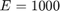 MPa and 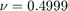 to represent nearly incompressible behavior. This problem has been proposed to by MacNeal and Harder as a test of an element's ability to represent the response of a nearly incompressible material. The plane-strain condition is assumed in the axial direction of the pipe which together with the radial symmetry confines the material in all but the radial direction and therefore amplifies the numerical difficulties associated with the confinement of the nearly incompressible material.
There is an analytical solution to this problem. Timoshenko and Goodier presented the original solution of Lame in their textbook. We are going to compare with both the stress distribution (radial and hoop stresses) and the displacement of the inner cylindrical surface.
| 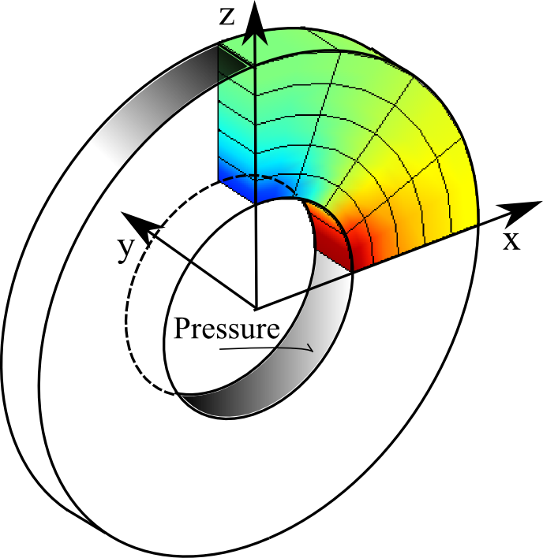 |
| Figure 1. Definition of the geometry of the internally pressurized thick pipe |
References:
- Macneal RH, Harder RL (1985) A proposed standard set of problems to test finite element accuracy. Finite Elements in Analysis and Design 1: 3-20.
- Timoshenko S. and Goodier J. N., Theory of Elasticity, McGraw-Hill, 2nd ed., 1951.
Solution
function pub_thick_pipe
u= physical_units_struct;
Internal radius of the pipe.
a=3*u.MM;
External radius of the pipe.
b=9*u.MM;
Length of the section of the pipe (thickness of the slice).
t=2*u.MM;
Geometrical tolerance.
tolerance =a/10000;
Young's modulus and Poisson's ratio.
E=1000*u.MEGA*u.PA;
nu=0.499;
Applied pressure on the internal surface.
p= 1*u.MEGA*u.PA;
Analytical solutions. Radial stress:
radial_stress =@(r)p*a.^2/(b^2-a^2).*(1-b^2./r.^2);
Circumferential (hoop) stress:
hoop_stress =@(r)p*a.^2/(b^2-a^2).*(1+b^2./r.^2);
Radial displacement:
radial_displacement=@(r)p*a^2*(1+nu)*(b^2+r.^2*(1-2*nu))/(E*(b^2-a^2).*r);;
Therefore the radial displacement of the loaded surface will be:
urex = radial_displacement(a);
The mesh parameters: The numbers of element edges circumferentially, through the thickness of the slice (axially for the pipe), and through the thickness of the pipe wall (radially).
nc=4; ny=1; nt=5;
The material is homogeneous, isotropic, fully three-dimensional.
prop=property_deformation_linear_iso(struct('E',E,'nu',nu)); mater = material_deformation_linear_triax (struct('property',prop ));
This function will execute the simulation for a particular finite element with selected numerical integration rules. The arguments are:
description = descriptive string mf = handle to a block-meshing function femmf = handle to a function constructing the finite element model machine, surface_integration_rule = surface integration rule
function execute_simulation (description, mf, femmf, ... surface_integration_rule) % Create the mesh and initialize the geometry. First we are going % to construct the block of elements with the first coordinate % corresponding to the angle, the second coordinate is the % thickness of the slicing the axial direction, and the third % coordinate is the thickness in the radial direction. anglrrange=90/180*pi; [fens,fes]= mf (anglrrange, t, b-a, nc, ny, nt); % Extract the boundary and mark the finite elements on the % interior surface. bdry_fes = mesh_boundary(fes, struct('other_dimension',1.0)); bcl = fe_select(fens, bdry_fes, ... struct ('box',[-inf,inf,-inf,inf,0,0],'inflate',tolerance)); internal_fenids= connected_nodes (subset(bdry_fes,bcl)); % Now shape the block into the actual wedge piece of the pipe. ayr=fens.xyz; for i=1:count (fens) angl=ayr(i,1); y=ayr(i,2); r=a+ayr(i,3); fens.xyz(i,:)=[r*sin(angl) y (r*cos(angl))]; end % Compose the model data clear model_data model_data.fens =fens; % The region is cconstructed directly with the finite element % model machine produced according to the instructions coded for % each element differently. This gives us an opportunity to exert % find control over which integration rule is to be used. In % particular, the selective reduced integration rule may be % introduced. clear region region.femm= femmf(fes); model_data.region{1} =region; % The symmetry boundary condition is specified by selecting nodes % on the plane x=0. clear essential essential.component= [1]; essential.fixed_value= 0; essential.node_list = fenode_select (fens,... struct ('box',[0 0 -inf,inf -inf,inf],'inflate',tolerance)); model_data.boundary_conditions.essential{1} = essential; % The constraint in the axial direction is specified % next. The nodes on the planes y=0 and y=t are selected. clear essential essential.component= [2]; essential.fixed_value= 0; essential.node_list = [fenode_select(fens,... struct ('box',[-inf,inf 0 0 -inf,inf],'inflate',tolerance)),... fenode_select(fens,... struct ('box',[-inf,inf t t -inf,inf],'inflate',tolerance))]; model_data.boundary_conditions.essential{2} = essential; % The second symmetry boundary condition is specified by selecting % nodes on the plane z=0. clear essential essential.component= [3]; essential.fixed_value= 0; essential.node_list = fenode_select (fens,... struct ('box',[-inf,inf -inf,inf 0 0],'inflate',tolerance)); model_data.boundary_conditions.essential{3} = essential; % The traction boundary condition is applied in the radial % direction. clear traction traction.fes =subset(bdry_fes,bcl);; traction.traction= @(x) (p*([1,0,1].*x)'/norm(([1,0,1].*x))); traction.integration_rule =surface_integration_rule; model_data.boundary_conditions.traction{1} = traction; % Call the statics solver to obtain the displacement solution. model_data =deformation_linear_statics(model_data); % Transfer the solution of the displacement to the nodes on the % internal cylindrical surface and convert to % cylindrical-coordinate displacements there. uv=gather_values (model_data.u,internal_fenids); ur=0*internal_fenids; xyz=fens.xyz; for j=1:length(internal_fenids) n=[xyz(internal_fenids(j),1),0,xyz(internal_fenids(j),3)]; n=n'/norm(n);% normal to the cylindrical internal surface ur(j)=uv(j,:)*n; end % Report the relative displacement on the internal surface: disp(['(Approximate/true displacement) at the internal surface: '... num2str(mean(ur)/urex*100) '%']) % Produce a plot of the Cartesian stress component. Note that this % is the usual representation of stress using nodal stress field. model_data.postprocessing.u_scale= 200; model_data.postprocessing.stress_component=3; model_data.postprocessing.stress_range=[-p,+p]; model_data=deformation_plot_stress(model_data); draw_annotation(model_data.postprocessing.gv,... [0.35, 0.8, 0.35, 0.075],description,... struct('backgroundcolor','w')) % Produce a plot of the solution components in the cylindrical % coordinate system. % Plot the analytical solution. figure; r =linspace(a,b,100); plot(r,radial_stress(r),'k.-','linewidth',3); hold on context. output='Cauchy'; idat.component =1; % Radial component of stress % For all finite elements in the finite element model machine: for ii=1:count(model_data.region{1}.femm.fes) % Now go through the integration points in the finite element % number ii, compute the stress components in the global % Cartesian coordinate system, then transform the stress % components into the cylindrical coordinate system. idat.r =[]; idat.s =[]; idat = inspect_integration_points(model_data.region{1}.femm, ... model_data.geom, model_data.u, [], ii, context,... @inspector, idat); % Plot the stress at each integration point in the graph. for j =1:length(idat.r) plot(idat.r(j),idat.s(j),'rx','linewidth',3); hold on end end title([description]) labels('Radial distance', 'Stress $\sigma_r$') set_graphics_defaults end
This is a helper function for the calculation of the integration-point stresses.
function idat =inspector(idat, out, xyz, u_xyz, pc) theNormal=[xyz(1),0,xyz(3)]; r=norm(theNormal);% distance from the axis of symmetry theNormal =theNormal/r;% compute the unit normal vector e1p=theNormal';% local cylindrical coordinate system basis vectors e3p=[0,1,0]';% this one points along the axis of the cylinder e2p=skewmat(e3p)*e1p;% this one is along the hoop direction Rm= [e1p,e2p,e3p];% transformation matrix for the stress tm = stress_6v_to_3x3t (mater,out);% stress in global XYZ tpm = Rm'*tm*Rm;% stress matrix in cylindrical coordinates sp = stress_3x3t_to_6v(mater,tpm);% stress vector in cylindr. coord. idat.r(end+1) =r; idat.s(end+1)=sp(idat.component); end
Regular quadratic tetrahedron
We start with the workhorse of most commonly used finite element packages, the quadratic tetrahedron. The finite element model machine is just the default used by the static solver, and the four-point quadrature rule is also standard for this element.
description ='T10';% tetrahedron mf =@T10_block; femmf =@(fes)femm_deformation_linear(struct('fes',fes,... 'material',mater,'integration_rule',tet_rule(struct('npts',4)))); surface_integration_rule=tri_rule(struct('npts',3)); execute_simulation (description, mf, femmf, surface_integration_rule);
(Approximate/true displacement) at the internal surface: 99.3758%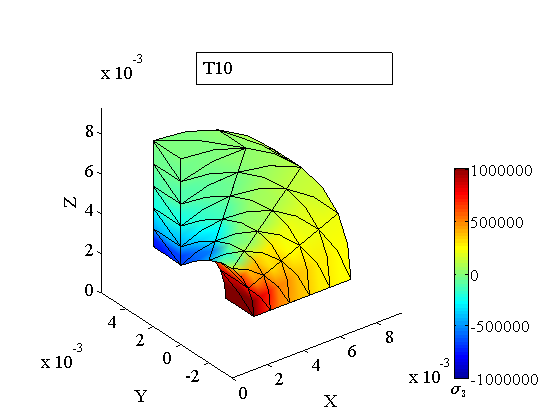 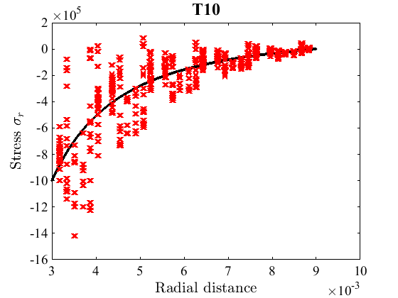
Nothing seems terribly wrong at first sight. The nodal stress plot shows a little bit of discoloration in patches, but the displacement is only less than a percent off.
However, when we look at the radial stress plot we can see that there's trouble. The stress at the integration points is way off from the analytical solution.
Why is the nodal stress field okay then? This may be attributed to the averaging, or smoothing, of the integration point values when they are getting converted into the node-based stress field. That process will take care of all that jumping around and settled to the "average" which may not be far away from the true stress.
Reduced integration serendipity hexahedron
An element that is often used in these situations is the uniformly under integrated serendipity (20-node) hexahedron. The same finite element model machine as above is used, and the integration is the Gauss rule one order lower than that required for full integration (which would be 3 x 3 x 3).
description ='H20R'; mf =@H20_block; femmf =@(fes)femm_deformation_linear(struct('fes',fes,... 'material',mater,... 'integration_rule',gauss_rule(struct('dim',3, 'order',2)))); surface_integration_rule=gauss_rule(struct('dim',2, 'order',2)); execute_simulation (description, mf, femmf, surface_integration_rule);
(Approximate/true displacement) at the internal surface: 100.0168%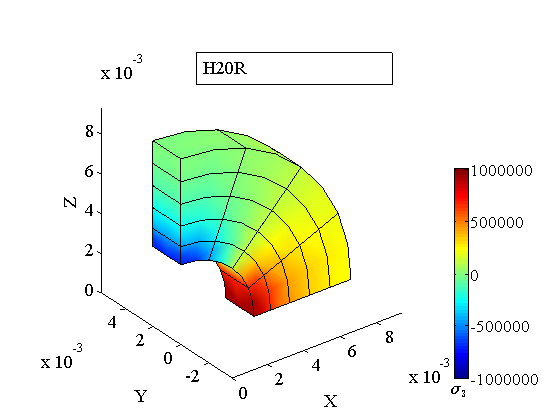 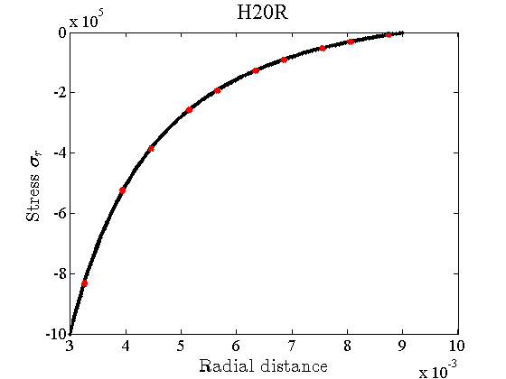
We can see that all the output points towards great performance from this element. The stress is smooth, in fact right on top of the analytical prediction.
Full integration serendipity hexahedron
It isn't difficult to spoil this picture. Here we use the same element, except for replacing the quadrature with full 3 x 3 x 3 Gauss rule (indicated by %<==).
description ='H20'; mf =@H20_block; femmf =@(fes)femm_deformation_linear(struct('fes',fes,... 'material',mater,... 'integration_rule',gauss_rule(struct('dim',3, 'order',3))));%<== surface_integration_rule=gauss_rule(struct('dim',2, 'order',2)); execute_simulation (description, mf, femmf, surface_integration_rule);
(Approximate/true displacement) at the internal surface: 95.2348%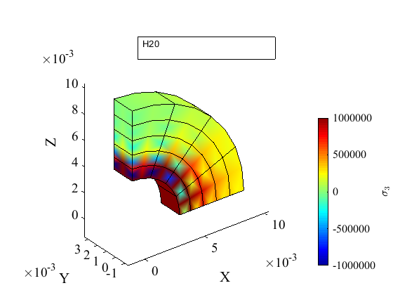 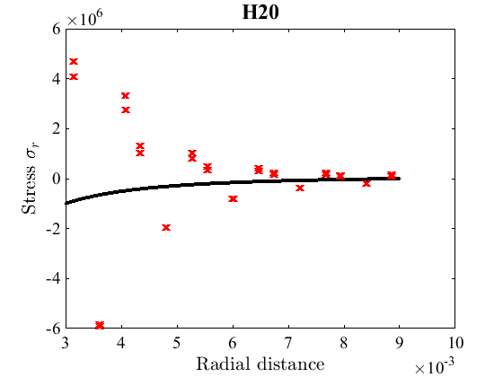
The stress is now totally unacceptable.
Lagrange 27-node quadratic hexahedron
Using a Lagrange 27-node quadratic hexahedron instead of the serendipity 20-node hexahedron does not help.
description ='H27'; mf =@H27_block; femmf =@(fes)femm_deformation_linear(struct('fes',fes,... 'material',mater,... 'integration_rule',gauss_rule(struct('dim',3, 'order',3)))); surface_integration_rule=gauss_rule(struct('dim',2, 'order',4)); execute_simulation (description, mf, femmf, surface_integration_rule);
(Approximate/true displacement) at the internal surface: 95.2399%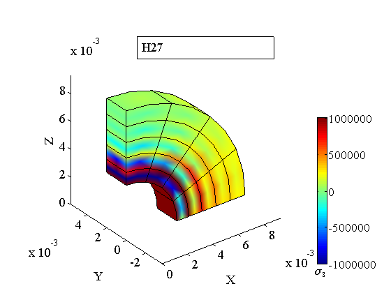 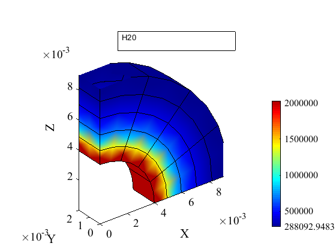
In fact, the results are as bad if not worse. Unfortunately, the remedy of using reduced (under) integration that worked for the 20 node hexahedron is now not available anymore.
Regular cubic hexahedron
Would it help to go to a cubic Lagrange hexahedron?
description ='H64'; mf =@H64_block; femmf =@(fes)femm_deformation_linear(struct('fes',fes, 'material',mater,... 'integration_rule',gauss_rule(struct('dim',3, 'order',4)))); surface_integration_rule=gauss_rule(struct('dim',2, 'order',4)); execute_simulation (description, mf, femmf, surface_integration_rule);
(Approximate/true displacement) at the internal surface: 99.9405%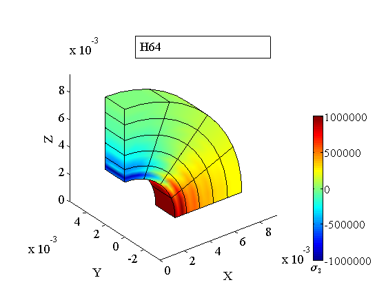 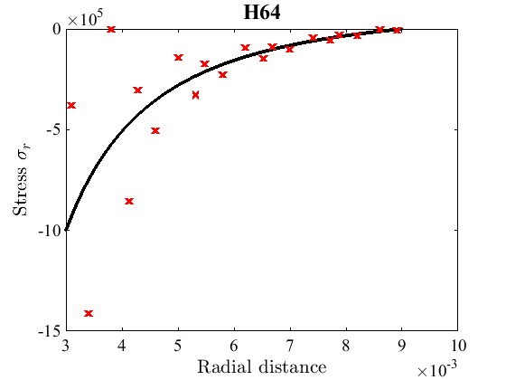
Unfortunately, the answer is no. The stress still oscillates.
The remedy both for the 27- and 64-node hexahedron is selective reduced integration. In contrast to the uniform reduced integration (which is not available for these elements as they would be producing singular stiffness matrices), the selective reduced integration applies different integration rules to compute terms associated with dilatation (volumetric) strains and those associated with shear (deviatoric) strains.
Selective reduced integration cubic hexahedron
The finite element model machine is now replaced with a specialized version that can use different integration rules for different terms. The volumetric rule is the reduced integration rule, in the case of the cubic hexahedron 3 x 3 x 3. The shear-strain rule is the full Gauss rule appropriate for this element.
description ='H64-SRI'; mf =@H64_block; femmf =@(fes)femm_deformation_linear_sri(struct('fes',fes, ... 'material',mater,... 'integration_rule_volumetric',... gauss_rule(struct('dim',3, 'order',3)),... 'integration_rule_deviatoric',... gauss_rule(struct('dim',3, 'order',4)))); surface_integration_rule=gauss_rule(struct('dim',2, 'order',4)); execute_simulation (description, mf, femmf, surface_integration_rule);
(Approximate/true displacement) at the internal surface: 99.9999%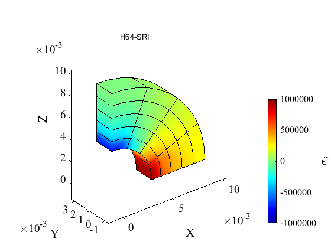 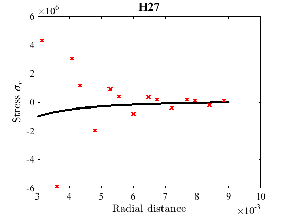
Clearly, the selective reduced integration removed all the oscillations and the approximation of the stress is right on the money.
The same remedy also works for the 27-node hexahedron. We just have to reduce the Gauss rule orders by one.
description ='H27-SRI'; mf =@H27_block; femmf =@(fes)femm_deformation_linear_sri(struct('fes',fes, ... 'material',mater,... 'integration_rule_volumetric',... gauss_rule(struct('dim',3, 'order',2)),... 'integration_rule_deviatoric',... gauss_rule(struct('dim',3, 'order',3)))); surface_integration_rule=gauss_rule(struct('dim',2, 'order',4)); execute_simulation (description, mf, femmf, surface_integration_rule);
(Approximate/true displacement) at the internal surface: 99.9781%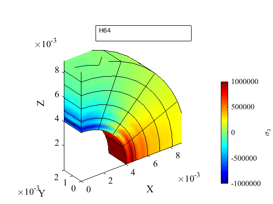 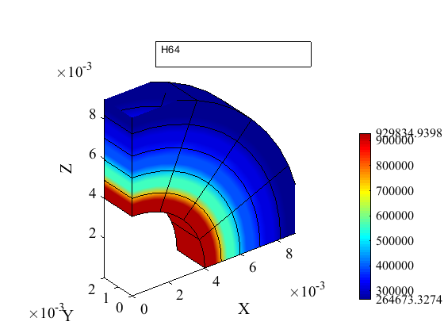
Again, oscillations gone, stress is very accurate overall.
As a matter of fact, even the least accurate hexahedron available, the H8 hexahedron with 8 nodes which does not give an acceptable accuracy as a rule, is in this case just fine when the selective reduced integration is applied.
Selective reduced integration H8 hexahedron
description ='H8-SRI'; mf =@H8_block; femmf =@(fes)femm_deformation_linear_sri(struct('fes',fes, ... 'material',mater,... 'integration_rule_volumetric',... gauss_rule(struct('dim',3, 'order',1)),... 'integration_rule_deviatoric',... gauss_rule(struct('dim',3, 'order',2)))); surface_integration_rule=gauss_rule(struct('dim',2, 'order',2)); execute_simulation (description, mf, femmf, surface_integration_rule);
(Approximate/true displacement) at the internal surface: 97.9954%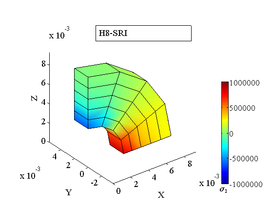 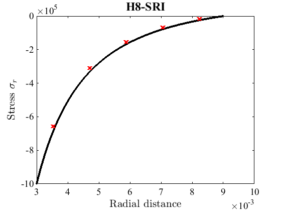
Finally we come back to the T10 tetrahedron. The same remedy, selective reduced integration, also works for the quadratic tetrahedron. The deviatoric rule is the original 4-point one, and the volumetric rule is just a single-point quadrature.
Selective reduced integration quadratic tetrahedron
description ='T10-SRI'; mf =@T10_block; femmf =@(fes)femm_deformation_linear_sri(struct('fes',fes,... 'material',mater,... 'integration_rule_volumetric',tet_rule(struct('npts',1)),... 'integration_rule_deviatoric',tet_rule(struct('npts',4)))); surface_integration_rule=tri_rule(struct('npts',3)); execute_simulation (description, mf, femmf, surface_integration_rule);
(Approximate/true displacement) at the internal surface: 100.0129%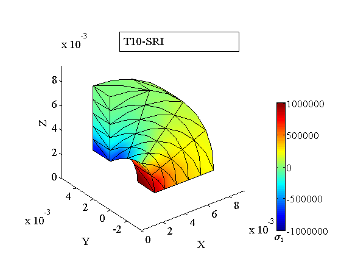 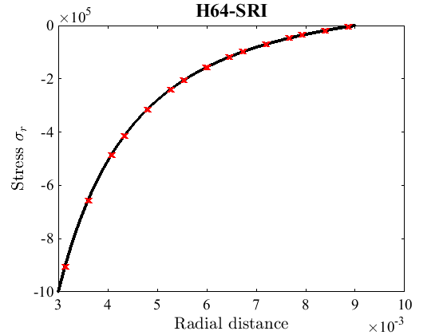
The stresses show a little bit of a loss of accuracy, which presumably is due to the fact that the tetrahedral mesh has some unsymmetry associated with it whereas the hexahedral mesh is perfectly aligned with the boundaries of the modeled wedge/slice.
Discussion
If we were simulating the response of compressible material, for instance for 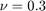 (steel) the finite elements tested above would all work fine. For Poisson's ratio approaching 1/2 ordinary isoparametric displacement-based finite elements may fail.
For nearly incompressible materials with displacement-based finite elements (all of those above) we are always better off using a trick such as the selective reduced integration (or uniform reduced integration for the H20 hexahedron) than the full integration. Sometimes we have the option of switching to methods specially designed to deal with incompressibility, such as the mixed approximation of pressure plus displacement. If that is not available, displacement-only finite element with a selective reduced integration is a good bet.
end